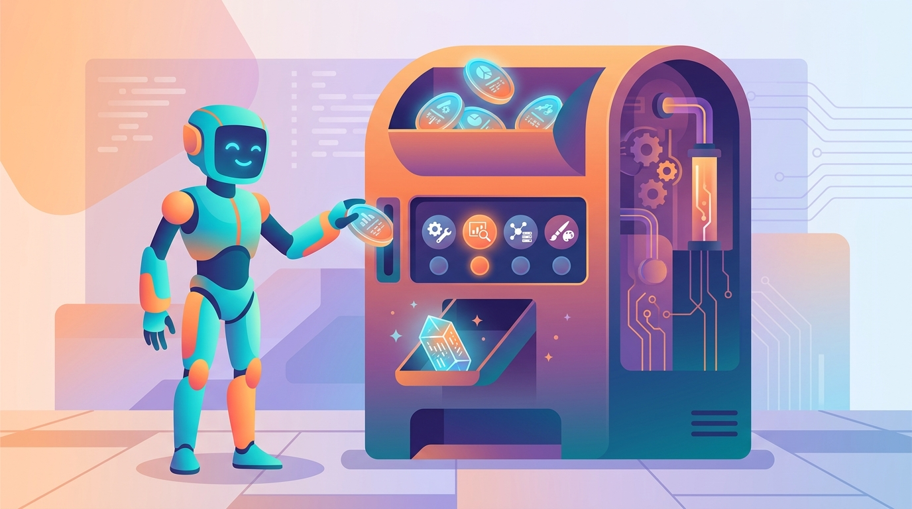

Give an LLM a prompt and it will answer once. Give it a tool and it will answer with the world's knowledge.
Agent X AI Agent

Prerequisites
This section builds on the agent foundations from Section 21.1, particularly the perception-reasoning-action loop. You should also be comfortable with LLM API parameters from Section 9.2, since function calling operates at the API level. Familiarity with JSON schema basics is helpful but not required.
Tool use is what transforms an LLM from a text predictor into an active participant in the world. Function calling lets the model request that your application execute specific functions with structured arguments, then incorporate the results into its response. This mechanism underpins every practical agent: web search, database queries, code execution, API calls, and file manipulation all flow through the same tool use abstraction. Modern models are specifically trained for tool use, making this a native capability rather than a prompt engineering trick. The function calling APIs from Section 9.2 provide the protocol-level foundation for tool use.
1. How Function Calling Works
Function calling (also called tool use) follows a consistent pattern across all major providers. You define the available tools as JSON schemas and include them in your API request. The model analyzes the user's message and decides whether any tools should be called. If so, it returns a structured response with the tool name and arguments rather than a text completion. Your application executes the function, sends the result back to the model, and the model incorporates it into its final response. Figure 21.2.1 traces the function calling lifecycle across application, API, and tools.
An LLM with tool use is like a student who finally learned that "show your work" means actually running the calculator, not just guessing what it would say.
2. OpenAI Function Calling
OpenAI's function calling API uses JSON Schema to define tool interfaces. When you
include tools in your request, the model may respond with a tool_calls
array instead of (or in addition to) a text message. Each tool call contains a function
name and a JSON object of arguments that conform to your schema.
Code Fragment 21.2.1 below puts this into practice.
# Implementation example
# Key operations: results display, API interaction
import openai
import json
client = openai.OpenAI()
# Define tools using JSON Schema
tools = [
{
"type": "function",
"function": {
"name": "get_weather",
"description": "Get the current weather for a given location. "
"Returns temperature, conditions, and humidity.",
"parameters": {
"type": "object",
"properties": {
"location": {
"type": "string",
"description": "City and state, e.g. 'San Francisco, CA'"
},
"unit": {
"type": "string",
"enum": ["celsius", "fahrenheit"],
"description": "Temperature unit (default: fahrenheit)"
}
},
"required": ["location"]
}
}
}
]
# Step 1: Send message with tools
response = client.chat.completions.create(
model="gpt-4o",
messages=[{"role": "user", "content": "What's the weather in Tokyo?"}],
tools=tools
)
# Step 2: Check if model wants to call a tool
message = response.choices[0].message
if message.tool_calls:
tool_call = message.tool_calls[0]
args = json.loads(tool_call.function.arguments)
print(f"Tool: {tool_call.function.name}")
print(f"Args: {args}")
# Step 3: Execute the function (your implementation)
result = get_weather(**args) # Your actual function
# Step 4: Send result back to model
final = client.chat.completions.create(
model="gpt-4o",
messages=[
{"role": "user", "content": "What's the weather in Tokyo?"},
message, # The assistant message with tool_calls
{
"role": "tool",
"tool_call_id": tool_call.id,
"content": json.dumps(result)
}
],
tools=tools
)
print(final.choices[0].message.content)3. Anthropic Tool Use
Anthropic's Claude uses a similar but slightly different API structure. Tools are defined
with input_schema rather than parameters, and tool results are
returned as content blocks with type tool_result. Claude also supports a
unique tool_choice parameter that can force the model to use a specific tool.
Code Fragment 21.2.2 below puts this into practice.
# Implementation example
# Key operations: results display, API interaction
import anthropic
client = anthropic.Anthropic()
# Define tools for Anthropic's API
tools = [
{
"name": "search_database",
"description": "Search a product database by query string. "
"Returns matching products with name, price, and rating.",
"input_schema": {
"type": "object",
"properties": {
"query": {
"type": "string",
"description": "Search query for product lookup"
},
"category": {
"type": "string",
"enum": ["electronics", "clothing", "books", "home"],
"description": "Product category filter"
},
"max_results": {
"type": "integer",
"default": 5,
"description": "Maximum number of results to return"
}
},
"required": ["query"]
}
}
]
# Send message with tools
response = client.messages.create(
model="claude-sonnet-4-20250514",
max_tokens=1024,
tools=tools,
messages=[{"role": "user", "content": "Find me wireless headphones under $100"}]
)
# Process tool use blocks
for block in response.content:
if block.type == "tool_use":
print(f"Tool: {block.name}")
print(f"Input: {block.input}")
# Execute and send result back
result = search_database(**block.input)
follow_up = client.messages.create(
model="claude-sonnet-4-20250514",
max_tokens=1024,
tools=tools,
messages=[
{"role": "user", "content": "Find me wireless headphones under $100"},
{"role": "assistant", "content": response.content},
{
"role": "user",
"content": [{
"type": "tool_result",
"tool_use_id": block.id,
"content": json.dumps(result)
}]
}
]
)Provider Comparison
| Feature | OpenAI | Anthropic | Google Gemini |
|---|---|---|---|
| Schema format | JSON Schema via parameters |
JSON Schema via input_schema |
OpenAPI-like declarations |
| Parallel calls | Yes (multiple tool_calls) | Yes (multiple tool_use blocks) | Yes (function_call array) |
| Force tool use | tool_choice: {"type": "function", ...} |
tool_choice: {"type": "tool", ...} |
tool_config parameter |
| Streaming | Tool call chunks in stream | content_block_start/delta |
Function call in stream |
| Nested objects | Full JSON Schema support | Full JSON Schema support | Limited nesting |
| Max tools | 128 | 64 (recommended under 20) | 128 |
Tool descriptions are the most important part of your schema. The model selects tools primarily based on their descriptions, not their names. A well-written description that explains when to use the tool, what it returns, and what its limitations are will dramatically improve tool selection accuracy. Think of descriptions as prompt engineering for tool use.
4. Designing Effective Tool Schemas
The quality of your tool schemas directly determines how well the model uses your tools. Poorly described tools lead to incorrect selections, wrong arguments, and misinterpreted results. The structured output techniques from Section 10.3 apply here as well: clear constraints and explicit formatting reduce errors. Here are the principles for designing schemas that models use correctly. Code Fragment 21.2.3 below puts this into practice.
Schema Design Principles
- Descriptive names: Use verb-noun format (
search_products,get_user_profile) that clearly indicates the action. - Detailed descriptions: Explain when to use the tool, what it does, what it returns, and when NOT to use it.
- Parameter descriptions: Every parameter should have a description with examples of valid values.
- Use enums: When a parameter has a fixed set of valid values, use an enum to constrain the model's output.
- Minimize required fields: Only mark parameters as required when they are truly necessary. Sensible defaults reduce errors.
- Return structured errors: Return error objects with error codes and messages, not raw exceptions.
# Well-designed tool schema with clear descriptions and constraints
well_designed_tool = {
"name": "search_knowledge_base",
"description": (
"Search the company knowledge base for articles, FAQs, and documentation. "
"Use this tool when the user asks about product features, pricing, "
"troubleshooting steps, or company policies. "
"Returns a list of relevant articles with titles, snippets, and URLs. "
"Do NOT use this for general knowledge questions unrelated to the company."
),
"input_schema": {
"type": "object",
"properties": {
"query": {
"type": "string",
"description": "Natural language search query. Be specific. "
"Example: 'how to reset password' or 'enterprise pricing tiers'"
},
"category": {
"type": "string",
"enum": ["product", "billing", "technical", "policy"],
"description": "Filter by article category. Omit to search all."
},
"limit": {
"type": "integer",
"minimum": 1,
"maximum": 10,
"default": 3,
"description": "Number of results. Use 1-3 for focused queries, "
"5-10 for broad exploration."
}
},
"required": ["query"]
}
}5. Multi-Step Tool Use
Real-world tasks often require multiple tool calls in sequence, where the output of one tool informs the input to the next. The agent loop handles this naturally: after each tool execution, the result goes back to the model, which decides whether additional tool calls are needed or whether it can produce a final answer. Code Fragment 21.2.4 below puts this into practice.
# implement run_agent_loop
# Key operations: agent orchestration, tool integration, API interaction
import openai, json
client = openai.OpenAI()
def run_agent_loop(user_message: str, tools: list, available_functions: dict,
model: str = "gpt-4o", max_iterations: int = 10) -> str:
"""Run a multi-step tool use loop until the model produces a final answer."""
messages = [{"role": "user", "content": user_message}]
for i in range(max_iterations):
response = client.chat.completions.create(
model=model,
messages=messages,
tools=tools
)
assistant_msg = response.choices[0].message
messages.append(assistant_msg)
# If no tool calls, the model is done
if not assistant_msg.tool_calls:
return assistant_msg.content
# Execute all tool calls (may be parallel)
for tool_call in assistant_msg.tool_calls:
fn_name = tool_call.function.name
fn_args = json.loads(tool_call.function.arguments)
if fn_name in available_functions:
try:
result = available_functions[fn_name](**fn_args)
content = json.dumps(result)
except Exception as e:
content = json.dumps({"error": str(e)})
else:
content = json.dumps({"error": f"Unknown function: {fn_name}"})
messages.append({
"role": "tool",
"tool_call_id": tool_call.id,
"content": content
})
return "Agent reached maximum iterations without completing."Models can request parallel tool calls in a single response. OpenAI's API may return multiple entries in the tool_calls array, and Anthropic may return multiple tool_use blocks. Always process all tool calls before sending results back, as the model expects all results in the next message.
6. The Model Context Protocol (MCP)
The Model Context Protocol, introduced by Anthropic in late 2024, standardizes how AI applications connect to external data sources and tools. Rather than each application implementing custom integrations, MCP provides a universal protocol (similar to how USB standardized hardware connections) that lets any MCP-compatible client connect to any MCP-compatible server.
MCP Architecture
MCP uses a client-server architecture. The MCP Host is your AI application (such as Claude Desktop, an IDE, or a custom agent). It connects to MCP Servers, which are lightweight programs that expose tools, resources, and prompts via the standard protocol. Servers can connect to databases, APIs, file systems, or any external service. Figure 21.2.2 shows MCP's architecture with a single host connecting to multiple tool servers. Code Fragment 21.2.5 below puts this into practice.
# Example: Building a minimal MCP server with the Python SDK
from mcp.server.fastmcp import FastMCP
# Create an MCP server
mcp = FastMCP("weather-server")
@mcp.tool()
def get_forecast(city: str, days: int = 3) -> dict:
"""Get weather forecast for a city.
Args:
city: City name (e.g., "London", "New York")
days: Number of days to forecast (1-7, default 3)
"""
# Your implementation here
return {
"city": city,
"forecast": [
{"day": i+1, "temp": 20+i, "condition": "sunny"}
for i in range(days)
]
}
@mcp.resource("weather://cities")
def list_cities() -> str:
"""List all cities with weather data available."""
return "London, New York, Tokyo, Paris, Sydney"
# Run the server (connects via stdio or SSE)
if __name__ == "__main__":
mcp.run()7. Agent-to-Agent (A2A) Protocol
While MCP connects agents to tools, the Agent-to-Agent (A2A) protocol (proposed by Google in 2025) enables agents to communicate with each other. A2A allows agents built on different frameworks to discover each other's capabilities, negotiate task delegation, and exchange results. Where MCP is about connecting agents to data and tools, A2A is about connecting agents to other agents, as explored in depth in Chapter 22: Multi-Agent Systems.
Key A2A Concepts
- Agent Card: A JSON metadata file that describes an agent's capabilities, skills, and supported interaction modes. Other agents discover what an agent can do by reading its card.
- Task: The fundamental unit of work in A2A. One agent sends a task to another, which processes it and returns a result. Tasks support streaming, multi-turn interactions, and asynchronous execution.
- Message and Part: Messages contain structured content (text, files, data) exchanged between agents during task processing.
MCP and A2A are complementary, not competing. MCP handles the "vertical" connection between an agent and its tools (databases, APIs, file systems). A2A handles the "horizontal" connection between agents that need to collaborate. A production multi-agent system typically uses both: MCP for each agent's tool access and A2A for inter-agent communication.
8. Building Custom Tools
Beyond standard API integrations, production agents often need custom tools tailored to specific business logic. A well-designed tool wrapper handles authentication, rate limiting, error formatting, and output truncation so the agent receives clean, usable results. The production API patterns from Section 9.3 (retry logic, rate limiting, error handling) apply directly to tool wrapper design. Code Fragment 21.2.6 below puts this into practice.
# Define ToolRegistry; implement __init__, register, decorator
# Key operations: agent orchestration, tool integration
import httpx
from typing import Any
class ToolRegistry:
"""Registry that wraps functions as agent-ready tools with error handling."""
def __init__(self):
self.tools: dict[str, dict] = {}
self.functions: dict[str, callable] = {}
def register(self, name: str, description: str, parameters: dict):
"""Decorator to register a function as an agent tool."""
def decorator(func):
self.tools[name] = {
"type": "function",
"function": {
"name": name,
"description": description,
"parameters": parameters
}
}
self.functions[name] = func
return func
return decorator
def execute(self, name: str, arguments: dict) -> dict[str, Any]:
"""Execute a registered tool with standardized error handling."""
if name not in self.functions:
return {"error": f"Unknown tool: {name}", "code": "TOOL_NOT_FOUND"}
try:
result = self.functions[name](**arguments)
# Truncate large results to manage token budget
result_str = json.dumps(result)
if len(result_str) > 4000:
result["_truncated"] = True
result["_note"] = "Result truncated. Refine your query for details."
return {"success": True, "data": result}
except httpx.HTTPStatusError as e:
return {"error": f"HTTP {e.response.status_code}", "code": "HTTP_ERROR"}
except Exception as e:
return {"error": str(e), "code": "EXECUTION_ERROR"}
def get_schemas(self) -> list[dict]:
"""Return all tool schemas for the API request."""
return list(self.tools.values())
# Usage
registry = ToolRegistry()
@registry.register(
name="query_sales_data",
description="Query the sales database for revenue, order counts, and trends. "
"Supports filtering by date range, product category, and region.",
parameters={
"type": "object",
"properties": {
"metric": {"type": "string", "enum": ["revenue", "orders", "avg_order_value"]},
"start_date": {"type": "string", "description": "ISO date, e.g. 2024-01-01"},
"end_date": {"type": "string", "description": "ISO date, e.g. 2024-12-31"}
},
"required": ["metric"]
}
)
def query_sales_data(metric: str, start_date: str = None, end_date: str = None):
# Implementation connects to your actual database
return {"metric": metric, "value": 1_250_000, "period": "2024-Q4"}Never trust tool arguments from the model without validation. LLMs can hallucinate invalid parameter values, produce malformed JSON, or pass unexpected types. Always validate arguments against your schema before execution. For high-stakes tools (database writes, financial transactions, email sending), implement an additional confirmation step before executing.
9. Native Tool Use Training
Modern models are not simply "prompted" to use tools. They are specifically trained on tool use datasets during both pre-training and post-training (RLHF/RLAIF). This training teaches models when to call tools, how to format arguments correctly, and how to interpret results. The training process typically includes synthesizing tool use trajectories from existing API documentation, collecting human demonstrations of tool use, and using reinforcement learning to reward correct tool selection and argument formatting.
This native training is why modern function calling is so much more reliable than early prompt-based approaches. The model has learned general patterns of tool use, not just the specific tools you provide. It understands concepts like parameter types, required vs. optional fields, and how to chain tool calls together.
Knowledge Check
Show Answer
Show Answer
fn_42 with an excellent description will be used correctly, while a tool named search_products with a vague description may be misused. Descriptions should specify when to use the tool, what it does, what it returns, and when NOT to use it.Show Answer
Show Answer
Show Answer
In philosophy of mind, Clark and Chalmers (1998) proposed the "extended mind thesis": that cognitive processes do not stop at the boundary of the brain but extend into the tools we use. A person with a calculator is not merely a person plus a device; the calculator becomes part of their cognitive system for arithmetic. LLM tool use instantiates this thesis in artificial systems. When a model calls a search API, it is not simply executing a function; it is extending its own cognitive boundary to include real-time knowledge retrieval. When it calls a code interpreter, it extends its reasoning capacity to include exact computation. The model's "intelligence" is no longer a property of the neural network alone but of the entire system: model plus tools plus protocols. This perspective reframes the question "how capable is the model?" into the more useful question "how capable is the system?" It also explains why tool design matters so much: the model can only extend its cognition through tools that are well-described and well-structured, just as a human can only benefit from a tool they understand how to use.
Key Takeaways
- Function calling follows a six-step lifecycle: send tools, receive tool_call, execute function, return result, send result to model, receive final response.
- OpenAI uses
parameterswith JSON Schema; Anthropic usesinput_schema. Both support parallel tool calls and forced tool selection. - Tool descriptions are the single most important factor for correct tool selection; write them like you would a prompt.
- MCP standardizes agent-to-tool connections; A2A standardizes agent-to-agent communication. Use both in production multi-agent systems.
- Custom tool registries should handle validation, error formatting, output truncation, and rate limiting.
- Modern models are natively trained on tool use, making function calling a first-class capability rather than a prompting trick.
- Always validate tool arguments before execution, and add confirmation steps for high-stakes operations.
Who: A sales operations engineer at a B2B SaaS company with 150 sales representatives
Situation: Sales reps spent 45 minutes daily manually entering meeting notes, updating deal stages, and logging follow-up tasks in Salesforce. The company wanted an AI assistant that could update the CRM directly from natural language instructions.
Problem: Early prompting approaches (asking the LLM to output JSON for API calls) produced valid JSON only 78% of the time. Malformed calls silently failed, leaving CRM records incomplete. Reps lost trust after discovering missing updates days later.
Dilemma: Exposing the full Salesforce API (400+ endpoints) overwhelmed the model and increased hallucinated tool calls. Restricting to a narrow set of 10 tools limited functionality and frustrated power users who needed advanced operations.
Decision: They implemented a two-layer tool architecture: 10 high-level "intent tools" (update_deal, log_meeting, create_task) that the LLM called directly, each of which internally mapped to the correct sequence of Salesforce API calls. A strict JSON schema with required fields and enum constraints reduced malformed calls.
How: Each tool included parameter validation with descriptive error messages. When the LLM provided invalid arguments (e.g., a deal stage that did not exist), the system returned the error and the list of valid options, allowing the model to self-correct in the next turn. All mutations required a confirmation summary before execution.
Result: Tool call success rate rose from 78% to 97%. CRM data completeness improved from 64% to 91%. Reps reported saving 30 minutes per day, and the sales ops team saw a 40% reduction in data cleanup tickets.
Lesson: High-level intent tools with strict schemas and self-correction loops are far more reliable than exposing raw APIs. Always validate arguments before execution, and surface clear error messages that help the model retry correctly.
Toward Universal Tool Interfaces (2024-2026): The Model Context Protocol (MCP) and Agent-to-Agent (A2A) protocol represent early steps toward standardizing how agents connect to tools and to each other. Active research is exploring automatic tool discovery, where agents find and learn to use new tools without human-written schemas. Gorilla (Patil et al., 2023) demonstrated that models can learn from API documentation, and ToolLLM (Qin et al., 2023) scaled this to 16,000+ APIs. Open questions include how to handle versioned and evolving APIs, how to compose tools from different providers reliably, and how to build trust frameworks for agent-to-agent delegation. The intersection of MCP with multi-agent communication (explored further in Section 22.1) is a particularly promising direction.
What's Next?
In the next section, Section 21.3: Planning & Agentic Reasoning, we examine planning and agentic reasoning, the techniques that enable agents to decompose and solve complex problems.
References & Further Reading
Demonstrates that LLMs can learn tool use through self-supervised training without human annotation. A breakthrough in autonomous tool learning. Foundational for understanding how models acquire tool capabilities.
Trains an LLM to generate accurate API calls from natural language, handling thousands of APIs. Introduces the APIBench benchmark. Key reference for building systems that call real-world APIs.
Scales tool use to over 16,000 APIs with automatic data generation and evaluation. Provides both a dataset and a trained model. Important for understanding tool use at scale.
OpenAI (2024). "Function Calling Guide."
Official documentation for implementing function calling with OpenAI models. Covers schema definition, parallel calls, and best practices. The standard reference for OpenAI tool integration.
Anthropic (2024). "Tool Use (Function Calling)."
Anthropic's guide to implementing tool use with Claude, including schema design and error handling. Provides practical patterns for production deployments. Essential for Claude-based agent development.